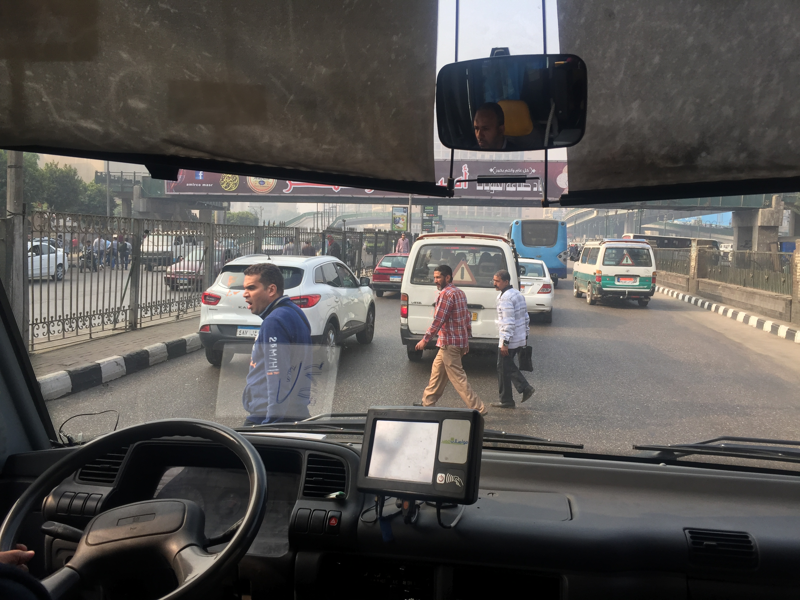
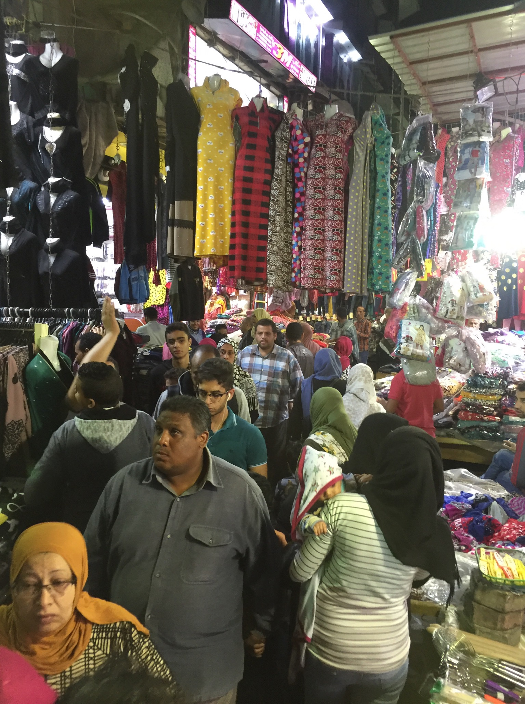

[caption id="attachment_2833" align="alignnone" width="3264"] Pedestrians in Cairo observed to take for granted that cars will yield to them[/caption]
{kind=link}
[caption id="attachment_2860" align="alignnone" width="1535"] Thousands of vendors observed to offer slightly varied products for sale[/caption]
{kind=link}
Observations
The following observations were made in the streets of Cairo, Egypt:
- pedestrians wandering across the road packed full of cars
- inter-weaving cars that seem to hold zero regard for traffic lanes
- cars abide with the instructions of police offices
- cars abide with traffic signals
- car spacing within traffic can be as close as an inch
- cars do not display observable dent on their body
- drivers tot the horn as a signal of intent as opposed to an expression of annoyance or frustration
- cars travel at a low average speed
Reflections on the observation
The relationship between pedestrians and drivers as a group in a city can potentially be used as a proxy into the society's culture. The contrast is stark when compared with the relationship of similar groups observed amongst coastal cities in the US.
It can be speculated that a seemingly chaotic traffic pattern tends to occur in a highly relationship centric society (Egypt, India and Cambodia) while an orderly traffic pattern tends to occur in a highly rule based society (US, UK and Germany).
In the former, the car and the pedestrian are not seen as distinct classes in the group. One can analogously describe cars as pedestrians on the road that just so happen to have 4 fours and are walking at a faster rate than pedestrians on 2 legs. Every member is always scanning the environment to understand how he or she should behave and respond.
In the latter, all members assume a well defined set of assumptions and operate as such. Execution of tasks occurs at a relatively higher velocity.
Using the legibility versus illegibility framework proposed by Sebastian Marshals, it can be speculated that highly relationship centric societies tend towards organic systems which are illegible by nature hence the observed chaos that counter intuitively seems to work.
It can further be speculated this fundamental difference in world view is the root cause of why relationship centric societies consider the rule based societies as oppressive and rule based societies consider the latter as untrustworthy.
Relevant references
- [Machina, Sebastian Marshals](http://garyteh.com/2017/04/book-summary-machina-by-sebastian-marshal/)